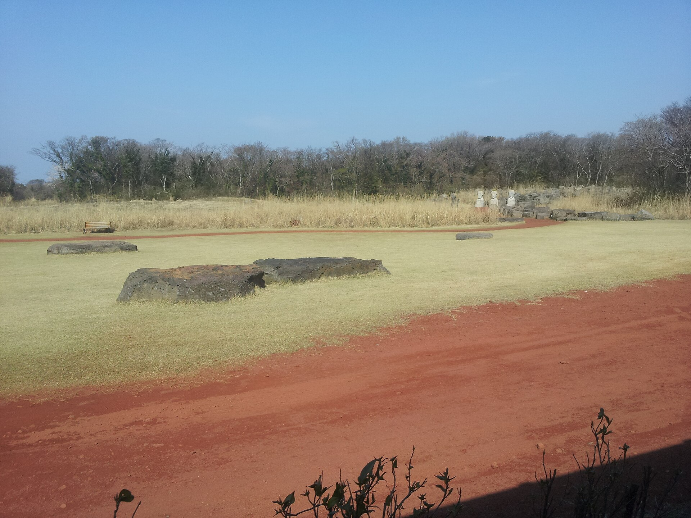

신화월드
도착 날 테마파크를 자유롭게 이용합니다.
2026. 12. 05 (토) – 12. 08 (화) · 원주공항 ↔ 제주공항 · 안내 초안
| 날짜 | 일정 | 식사 |
|---|---|---|
| 12/5 (토) 1일차 |
학교 앞에서 모여 출발 09:50 원주공항 도착 · 탑승 수속 10:55 원주 출발 → 12:10 제주 도착 13:00 함께 이동 · 13:20–14:00 중식 14:50–17:30 신화월드 테마파크 18:10–19:00 석식 · 19:10 숙소 체크인 |
중 흑우불고기 석 화목원정식 |
| 12/6 (일) 2일차 |
조식 후 08:50 출발 09:30–10:30 오설록 녹차밭 또는 새별오름 10:50–12:30 카멜리아힐 12:40–13:40 중식 14:20–15:20 천지연폭포 15:40–16:40 감귤 따기 체험 18:00–19:20 석식 · 19:40 숙소 도착 |
조 호텔식 중 흑돼지카츠 석 샤브올데이 |
| 12/7 (월) 3일차 |
조식 후 08:40 출발 09:20–10:50 에코랜드 곶자왈 열차 11:10–12:10 다이나믹메이즈 (양말) 12:30–13:30 중식 14:20–17:00 아쿠아플라넷 · 16:20 공연 18:20–19:10 석식 · 19:20 숙소 도착 |
조 숙소식 중 토종닭샤브 석 흑돼지구이 |
| 12/8 (화) 4일차 |
07:00–08:00 조식 · 08:40 출발 09:00–10:00 이호테우말 등대 · 무지개해안도로 10:20–11:40 테마파크 툰 12:00–12:40 중식 · 13:00 제주공항 수속 14:20 제주 출발 → 15:35 원주 도착 학교로 이동 후 해산 |
조 숙소식 중 제육볶음 고등어구이 |
숙소는 아시아호텔 또는 동급입니다. 현지 가이드 없이 선생님과 전용 차량으로 이동합니다. 항공 시각·순서는 현지 사정으로 달라질 수 있습니다.
조혁 이사 010-4249-4026 · 이재명 대표 010-9443-7881 · 사무실 033-562-2551 · 현지 가이드 없음

사북청소년장학센터
2026. 12. 05 (토) – 12. 08 (화) · 원주 ↔ 제주
안내 초안
12월 초 제주입니다. 바람막이를 챙기고, 동백이 피는 계절의 서쪽과 바다 쪽을 돌아봅니다.
도착 날 테마파크를 자유롭게 이용합니다.

동백 정원입니다. 12월에 꽃과 숲을 보기 좋은 곳입니다.

곶자왈 숲을 궤도열차로 지나갑니다.

수족관과 공연이 일정에 들어 있습니다. 공연은 16:20입니다.
일정표의 원주–제주 시간입니다. 같은 시각 정기편은 진에어로 안내되는 경우가 많습니다. 편명과 탑승 시각은 발권된 이티켓을 기준으로 합니다. 12월 5일은 토요일이라, 운항 요일은 시즌에 따라 달라질 수 있습니다.
가는 편 · 12/5 (토)
원주 10:55
출발
제주 12:10
도착 · 비행 약 1시간 15분
오는 편 · 12/8 (화)
제주 14:20
출발
원주 15:35
도착 후 학교로 이동 · 비행 약 1시간 15분
학생 탑승에는 발급 3개월 이내의 주민등록등본이 필요합니다. 선생님은 신분증을 지참합니다. 항공사 사정과 당일 공항 상황에 따라 시각이 달라질 수 있습니다.
항공권 발권(E-티켓 발행) 완료 후 아래 시간을 기준으로 준비합니다. 이번 여행은 선생님과 함께하는 학생 단체입니다. 공항 카운터에서 등본과 신분증을 함께 제시하면 이웃 좌석을 요청할 수 있습니다.
12/4 (금) 10:55 오픈
12/5 (토) 10:25 마감
진에어 국내선 웹·모바일 체크인은 출발 24시간 전부터 출발 30분 전까지입니다. 어린이 동반 단체는 온라인 체크인이 제한될 수 있어, 원주공항 카운터 수속을 기본으로 합니다.
12/7 (월) 14:20 오픈
12/8 (화) 13:50 마감
일정은 13:00 제주공항 도착입니다. 체크인에서 고를 수 있는 좌석은 온라인 체크인 무료 좌석입니다. 비상구 좌석은 어린이에게 배정되지 않습니다.
항공사 정책과 당일 공항 사정에 따라 체크인 방법과 좌석이 달라질 수 있습니다. 이티켓의 항공사가 다르면 그 항공사 안내를 따릅니다.
1일차 동선을 준비합니다.
동선
경로를 불러오는 중입니다.
실선은 차량, 점선은 항공입니다. 감귤 체험과 식당은 장소가 안내된 뒤 동선에 넣습니다.
모바일(카카오톡 등)에서는
인쇄가 어려울 수 있어요.
다른 브라우저나 PC에서 열어 주세요.
안내 초안입니다. 현지 사정에 따라 순서와 장소가 달라질 수 있습니다. 현지 가이드 없이 선생님과 전용 차량으로 이동합니다.


지도는 오설록을 기준으로 그렸습니다. 새별오름으로 바뀌면 동선이 조금 달라집니다.


3박 · 제주시
4성급으로 안내된 숙소입니다. 호텔이 동급으로 바뀌면 체크인 안내를 따릅니다. 조식은 숙소에서 합니다.
12월 제주는 한낮에도 바람이 셉니다. 얇은 패딩이나 바람막이가 편합니다.
종이 일정표 대신 이 스마트 가이드북으로 일정을 확인합니다.
📊 실시간 가이드북 열람 : 집계 중